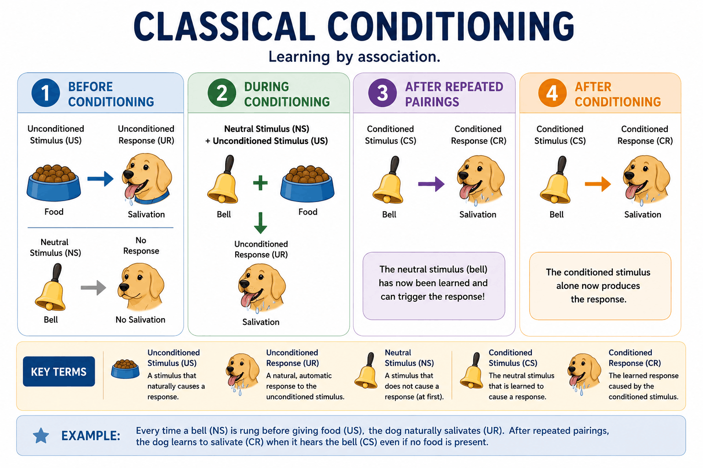

So far in Unit 3, we have explored the fascinating world of development—how we grow and change cognitively, social-emotionally, and physically across our entire lifespan. Now, it is time to shift gears and focus on how we acquire new knowledge and actions through learning.
While everyday language often associates "learning" with sitting in a classroom and memorizing facts, much of what we study as learning in psychology is heavily rooted in the behavioral perspective. Behaviorism emphasizes observable actions and explores how our environment directly shapes what we do over time.
The story of behaviorism—and our modern understanding of how we learn to associate different events—starts not with a psychologist, but with a Russian physiologist named Ivan Pavlov. His legendary (and somewhat accidental) discoveries laid the groundwork for one of the most famous behavioral theories in psychology.
Ivan Pavlov accidentally revolutionized psychology when he noticed his lab dogs salivating before their food even arrived. He discovered Classical Conditioning, a fundamental associative learning process in which a completely neutral stimulus becomes paired with a meaningful stimulus and eventually begins to produce a learned, automatic response.
To master this topic for the AP Exam, you must be able to break any scenario down into its four foundational components. Let's use the classic example of Pavlov's dog:

Classical Conditioning. This diagram illustrates how learning by association occurs. By repeatedly pairing a neutral stimulus (like a bell) with an unconditioned stimulus (like food), a learned, conditioned response is eventually formed. Understanding how to identify these specific variables—US, UR, NS, CS, and CR—is absolutely essential for mastering the foundations of behavioral psychology!
Learning an association is just the beginning. Once a behavior is established, it goes through various stages depending on how the environment changes.
Acquisition is the initial stage of learning when a neutral stimulus is linked to an unconditioned stimulus, causing the neutral stimulus to begin triggering the conditioned response. For this connection to successfully form, the timing and order of presentation are critical. The neutral stimulus must be presented slightly before the unconditioned stimulus (usually about half a second) so the brain learns to anticipate the impending event. If the bell rings after the food is already presented, the predictive association will not take hold!
Once a conditioned response is acquired, it is not necessarily set in stone. As the environment shifts and new experiences occur, a learner's reactions can fade away, unexpectedly return, or adapt to other stimuli in the world around them.
⚠️ Exclusion Statement: While you need to understand that the timing and order of the stimulus presentation matters for acquisition, you do not need to memorize the specific differences between the various timing types of classical conditioning (e.g., trace, delayed, simultaneous, or backward conditioning). The AP Exam explicitly excludes those specific distinctions!
While early behaviorists believed any stimulus could be conditioned to any response, modern psychology recognizes the role of Biological Preparedness—the evolutionary, innate tendency for organisms to more easily learn certain associations that have aided survival over millennia (such as a rapid fear of snakes or heights over a fear of flowers).
A prime example of this evolutionary advantage is Taste Aversion, a learned avoidance of a specific food or flavor after a single experience of nausea or illness following its consumption. Because surviving food poisoning is an evolutionary priority, this phenomenon heavily relies on One-Trial Conditioning—a unique form of associative learning where the brain forms a permanent connection after just one single pairing of a stimulus and response, without needing the repetitive reinforcement typical of acquisition.
It isn't just physical reflexes that can be conditioned; emotional responses can be classically conditioned as well (such as associating a specific perfume with a feeling of romantic longing, or a dentist's drill with intense anxiety). Fortunately, these learned emotional behaviors can form the basis of clinical therapeutic interventions, such as Counterconditioning—a behavioral technique designed to replace an unwanted fear response to a stimulus with a more desirable, relaxed response by repeatedly pairing the fear-inducing stimulus with something highly positive.
📋 AP Core Exclusion: You do not need to study the cognitive elements of classical conditioning! The Expectancy Theory of learning is explicitly excluded from the AP Psychology Exam.
⚠️ Generalization vs. Discrimination: These two terms represent opposite outcomes on the exam. If Little Albert is conditioned to fear a white rat and suddenly bursts into tears when he sees a fluffy white rabbit, that is Stimulus Generalization (the rule was applied too broadly). If he only cries at the rat but happily pets the rabbit, that is Stimulus Discrimination (he recognized the difference).
Classical conditioning is one of the most heavily tested topics on the AP Exam. Make sure you can confidently label the UCS, UCR, CS, and CR in any scenario: